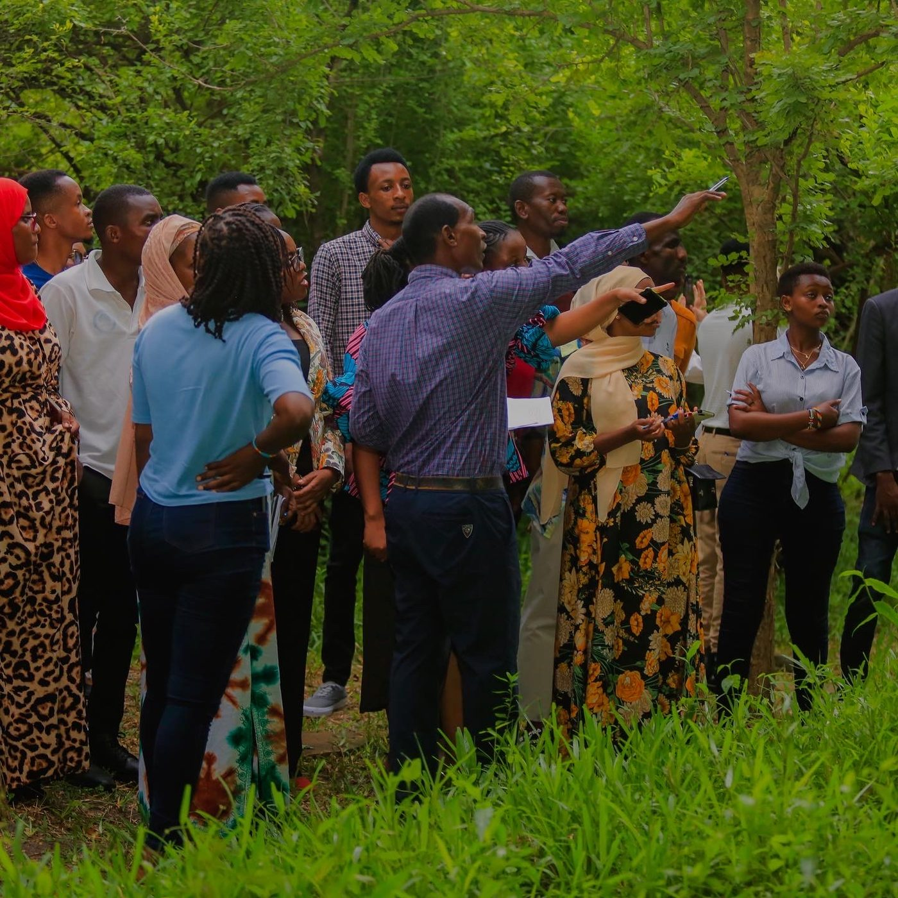
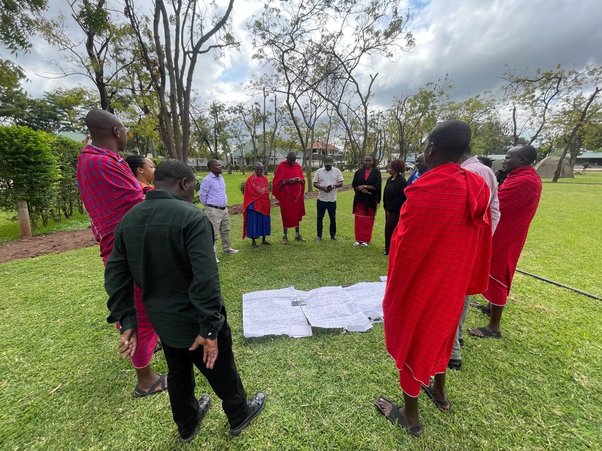
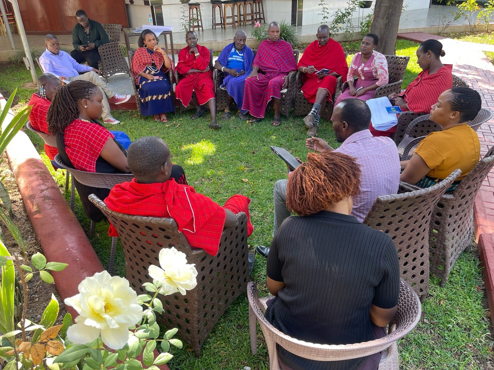
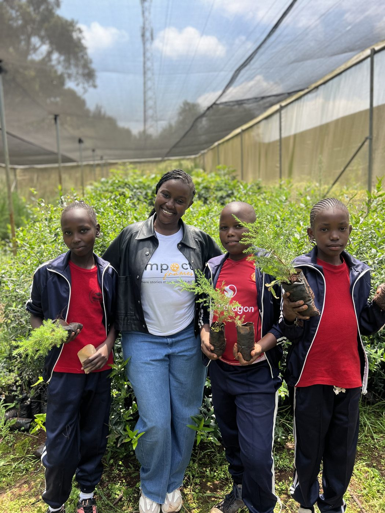

Building communities that are informed, resilient and ready to act.
Pulse Network is a Tanzanian non-profit organization advancing environmental sustainability, climate action and social equity through community knowledge, practical solutions and meaningful participation.
We connect knowledge with action.
Pulse Network works with youth, women, grassroots communities, local leaders and other stakeholders to turn environmental and climate challenges into opportunities for learning, innovation and community-led action.
Understand
Build knowledge that's relevant to real, local conditions.
Act
Turn that knowledge into practical, community-led solutions.
Influence
Carry community experience into policy and public dialogue.
Four ways we work with communities.
Waste Management & Circularity
Turning waste challenges into resource recovery, cleaner communities and green livelihood opportunities.
Water, Sanitation & Hygiene
Supporting communities to strengthen water management, sanitation, hygiene and climate resilience.
Climate Change Literacy & Action
Making climate knowledge accessible, locally relevant and connected to practical action.
Gender Equality & Social Inclusion
Ensuring women, youth and marginalized groups have voice, leadership and opportunity.
Community, up close.



Community engagement and environmental action across Tanzania.
We don't just talk about change.
Learn
Build knowledge and awareness.
Act
Support practical community solutions.
Connect
Bring communities and partners together.
Influence
Amplify community voices in decision-making.
Ideas in implementation.
Eco-Action Academy
Climate literacy, training and mentorship.
Circular Hub
Waste recovery, circular economy and green livelihoods.
Equity Nexus
Gender equality and inclusive environmental action.
Green Voice Network
Community voices, storytelling and advocacy.
Change starts with people who are willing to act.
Whether you are a young person, community organization, government institution, funder, researcher or potential partner, there is a place for you in the Pulse Network.